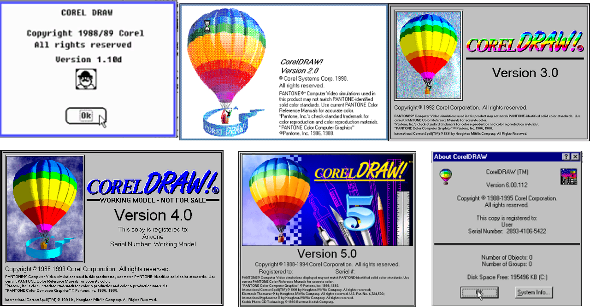
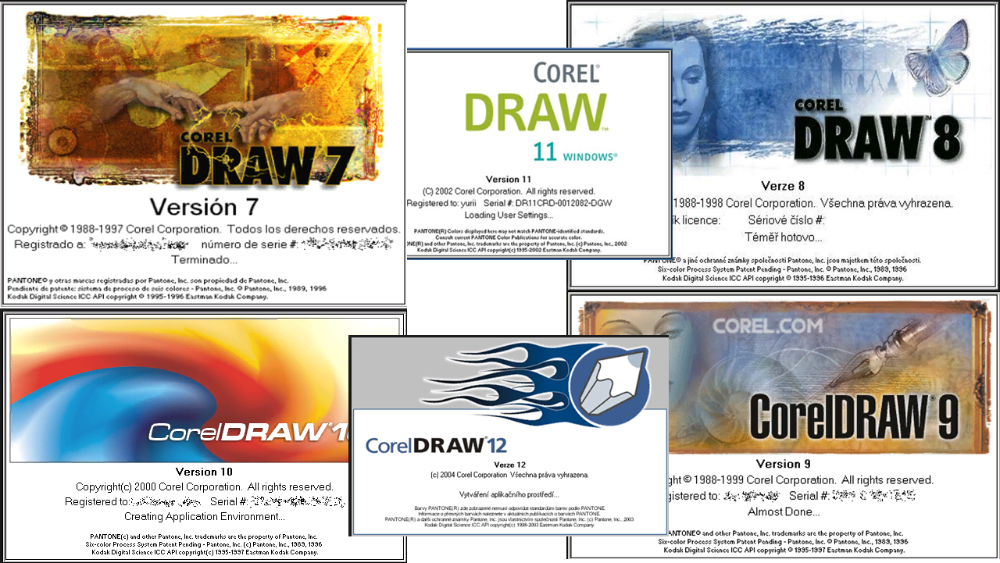
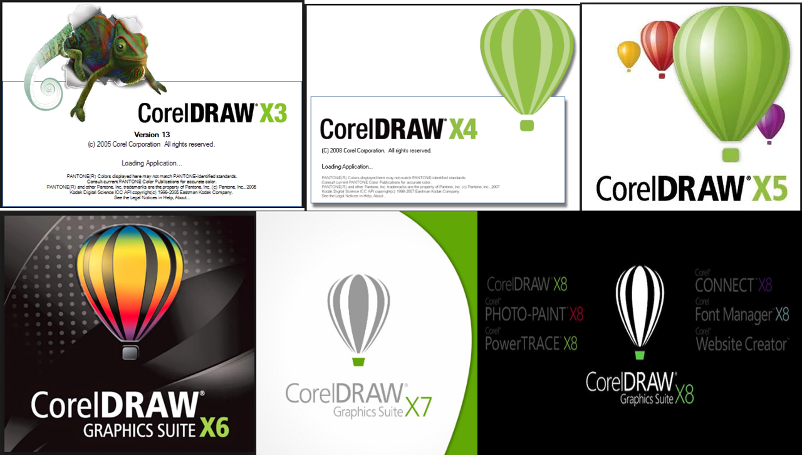
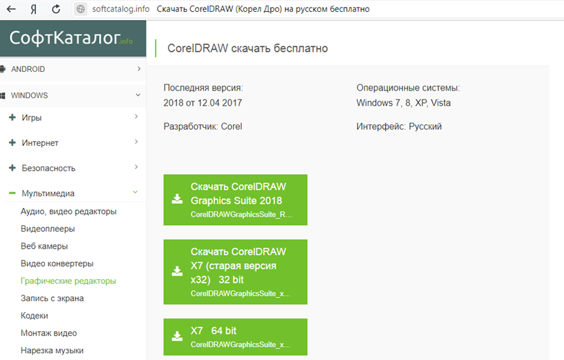
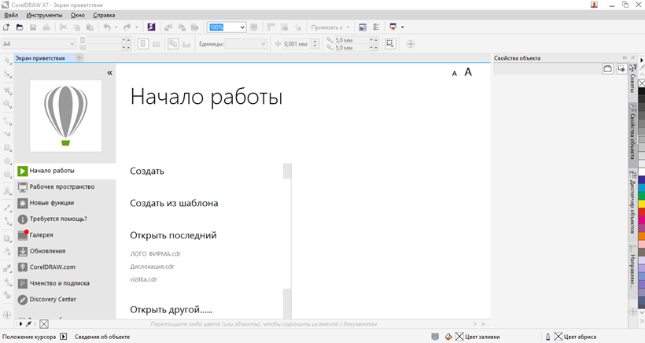
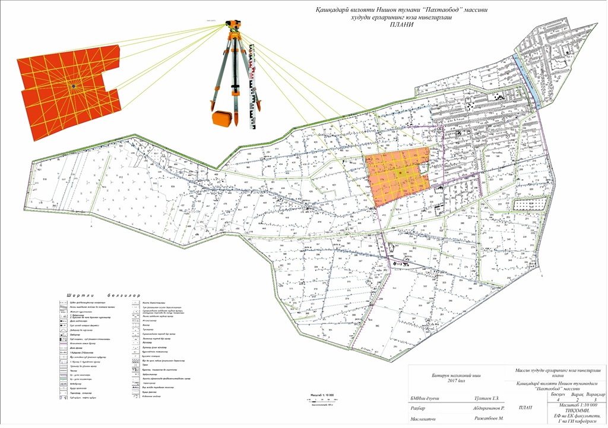

Мавзу: CorelDraw дастури ёрдамида жой плани ва топографик карталарини расмийлаштириш
Reja.
1. CorelDRAW dasturi xaqida ma`lumotlar
2. CorelDRAW dasturini yuklab olish va o`rnatish
3. CorelDRAW dasturida ishlash
Corel DRAW dasturi grafik tasvirlarga ishlov berish va tuzatmalar kiritish, vector
ko`rinishidagi qatlamlarni yaratish va tuzatish kabi ishlarni amalga oshirishda keng
qo`llaniladigan dasturiy ta`minotlar turkumiga kiradi. Mazkur dasturning ilk versiyalarida
(tizim tashkilotlariga 10, 11 ,12, 13, 14, 15, 16, 17, 18, 19 versiyalari kirib kelgan)
ishlab chiqarish tashkilotlarida grafik kartalar chizishda keyinchalik esa kompanovka qilish
va kartalarni nashr qilishda foydalanib kelinmoqda.
Dastlab 1, 2, 3, 4, 5, 6, 7, 8, 9- versiyalari ishlab chiqarilgan bo`lib rangli
tasvirlarni
yaratishda keng qo`llanilgan.



Corel DRAW dasturi yuklab olish uchun http://softcatalog.info/ru/programmy/coreldraw saytiga
kiriladi va Скачать CorelDRAW tugmachasi bosiladi. Natijada yuklanish karayoni boshlanadi.
Dastur yuklanib bo`lingach o`rnatish ishlari amalga oshiriladi.

Corel DRAW nomi ostida yuklangan faylni ikki marta sichqoncha bilan bosib litsenzion
kelishuvlar belgilanadi va kompyuterga dasturni o`rnatish jarayoni boshlanadi. Bu jarayon
o`rtacha 10 daqiqani o`z ichiga oladi.
Ish stolida avtomatik tarzda ikonka xosil qiladi va mazkur ikonka yordamida
Corel DRAW dasturga kirishimiz mumkin bo`ladi.
Corel DRAW dasturi ishga tushirilgach ishni boshlash oynasi hosil bo`ladi. Mazkur
oynadan yangi ish boshlash, shablonlarni ochish, oxirgi ishlarni ochish va mavjud bajarilgan
boshqa ishlarni izlab ochish buyruqlarini bajarish mumkin bo`ladi.

To'liq integratsiyalangan ilovalar va CorelDRAW® Graphics Suite X7 plaginlari grafik
dizaynning har qanday jihatlarida ishlashga imkon beradi: vektor grafikasi va sahifa
ketma-ketligini tartibga solish rasmlar, rastr tasvirlarni vektorga aylantirish va
veb-saytlarni loyihalash.
Qo`shimcha ravishda, "Выровнять и распределить" o`rnatish oynasi mutaxassislar uchun
ajralmas vosita bo`ldi. Tez va oson kirish, vaqtni tejashga mo'ljallangan joylashuvni
boshqarish vositalaridan kelib chiqqan holda, grafikalar sohasida ob'ektlar CorelDRAW
dasturida yaratiladi, bu imkoniyatlardan keng ko`lamda foydalanish mumkin. Tugunlarni
taqsimlash juda oson. Ularning orasida gorizontal yoki vertikal ravishda, chizilgan
sahifasini yoki chekka qutisidan foydalanib, teng masofani qo'shishingiz mumkin.
Tizim talablari
Quyidagi ro'yxatda minimal tizim talablari ko'rsatilgan. Tegmaslik bilan ta'minlash
uchun iltimos unutmang
Ishlash, ro'yxatda ko'rsatilganidan ko'ra ko'proq RAM va qattiq disk maydoni talab
qiladi.
• Windows 7 ning 32-bit yoki 64-bit versiyasi Service Pack 1, Windows 8.1 yoki Windows
10 bilan
oxirgi xizmat to'plami
• Intel Core i3 / 5/7 yoki AMD Athlon 64 protsessori
• 2 Gb RAM
• 1 Gb qattiq disk maydoni
Dasturni elektron shaklda yuklab olish uchun ko'proq joy talab etiladi, chunki disk
kerak
Yuklab olish fayllarini, ochilgan fayllarni va asl nusxalarini o'z ichiga olgan haqiqiy
o'rnatish fayllarini joylashtirish
fayllar.
• Sichqoncha, planshet yoki ko'p sensorli ekran
• Ekran o'lchamlari
• Ekran o'lchamlari 1280 x 720 100% (96 dpi)
• 1920 x 1080 150%
• 2560 x 1440 @ 200%
• DVD drayveri (qutidagi dasturni o'rnatish uchun talab qilinadi)
• Microsoft .NET Framework 4.6
• Microsoft Internet Explorer 11 brauzeri (yoki undan keyin)
• CorelDRAW Graphics Suite-ga kirish va autentifikatsiya qilish uchun ishlash
yangiliklarini yuklab oling
barqarorlik, onlayn kontentga kirish va bir qator komponentlardan foydalanish (masalan, QR
kodlari yoki Content Center)
Internetga ulanish talab etiladi.
CorelDRAW Graphics Suite-2018 loyihalarining aktivlari foydalanuvchi bilan qanday
munosabatda bo'lish usullari tubdan qayta ishlanadi. To'liq qayta ko'rib chiqilgan tanlov va
oshkoralik menyusi dizayni samaradorlikni oshirishga yordam beradi.
CorelDRAW va Corel PHOTO-PAINT-da to'ldirilgan tarzda shaffoflik effektlari qo`shilgan.
Optimallashtirilgan foydalanuvchi interfeysi Shaffoflik va shaffoflik effektlarini tezroq
ishlatish, yaratish va topish imkonini beradi. Siz yangi video yuklashingiz mumkin,
o'zingizning kutubxonangizni qo'shing, aktivlarning jamg'armasini har qanday joyga o'tkazish
uchun qulay va aktivlarning xususiyatlarini o'zgartirish va bularning barchasi bitta paket
doirasida jamlanadi. Bundan tashqari, taxalluslarni ko'rish uchun ham foydalanishingiz uchun
kompyuteringizdagi boshqa papkaga, USB ga yoki birgalikda tarmoq papkasida kontent saqlangan
bo`ladi.
